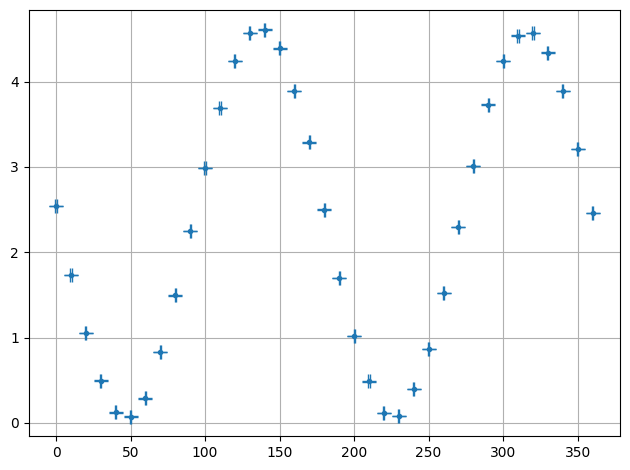
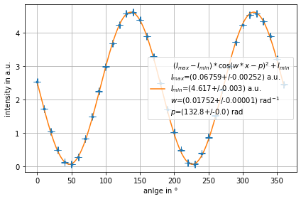

Custom Fit¶
[1]:
import numpy as np
from smpl import plot
from smpl import functions as f
import uncertainties.unumpy as unp
[2]:
data = data_malus = np.loadtxt("test_custom_data.csv",skiprows = 1, delimiter=',')
ydata = unp.uarray(data[:,0],data[:,1])
xdata = unp.uarray(data[:,2],data[:,3])
plot.data(xdata,ydata)

[30]:
def Malus(x,I_max,I_min,w,p):
''' $(I_{max}-I_{min})*\\cos(w*x-p)^2+I_{min} $'''
return (I_max-I_min)*np.cos(w*x-p)**2+I_min
plot.fit((xdata),ydata,Malus,xaxis="anlge in °", yaxis="intensity in a.u.", params=[4.6,0.11,0.0175,180+90-137], units=["a.u.","a.u.","rad$^{-1}$","rad"])
[30]:
array([0.0675892412774686+/-0.004996586085156836,
4.6169371384944835+/-0.005548445222666175,
0.017517668891345015+/-2.2094692219099785e-05,
132.77077909042768+/-0.004652486401592212], dtype=object)
